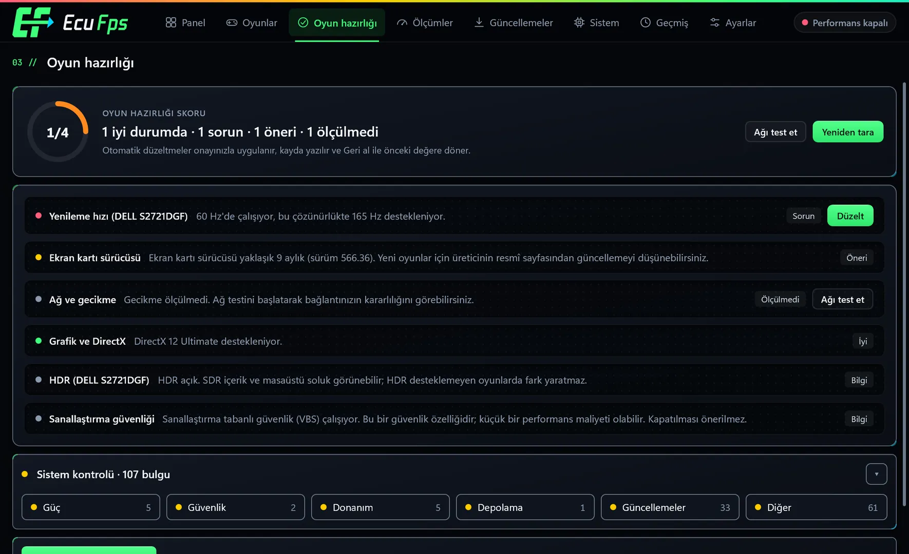
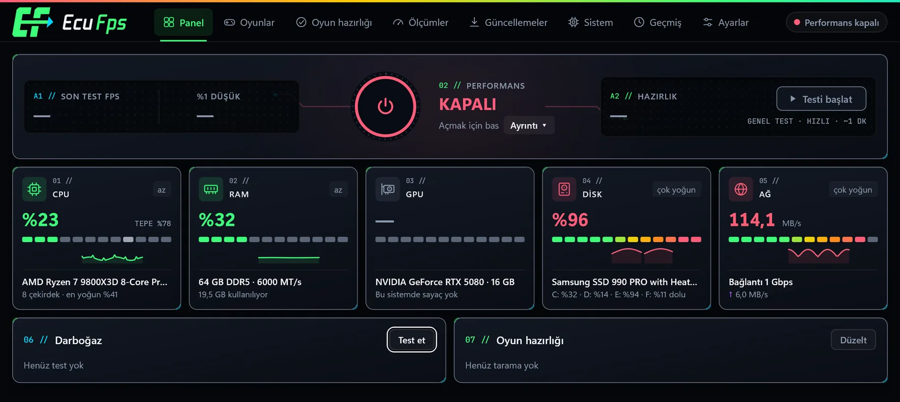
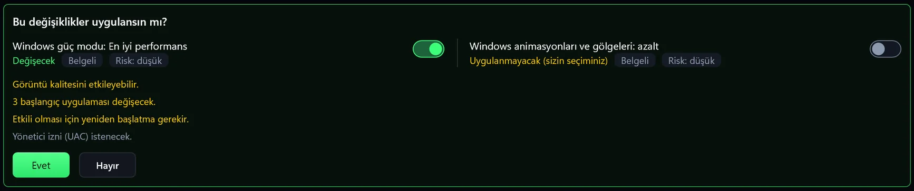
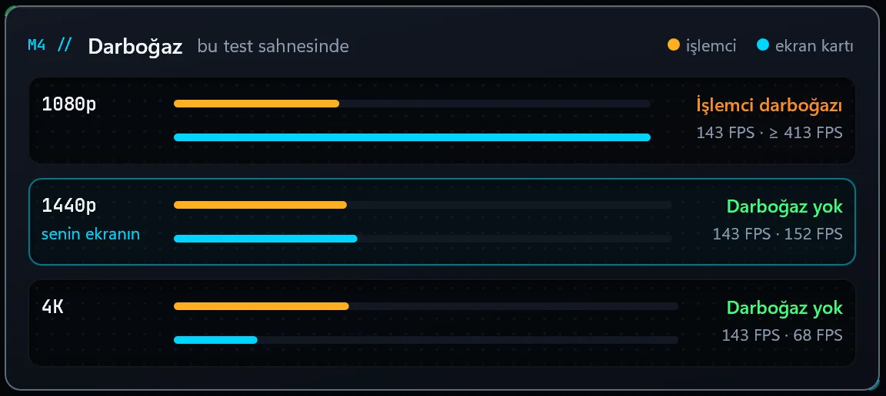
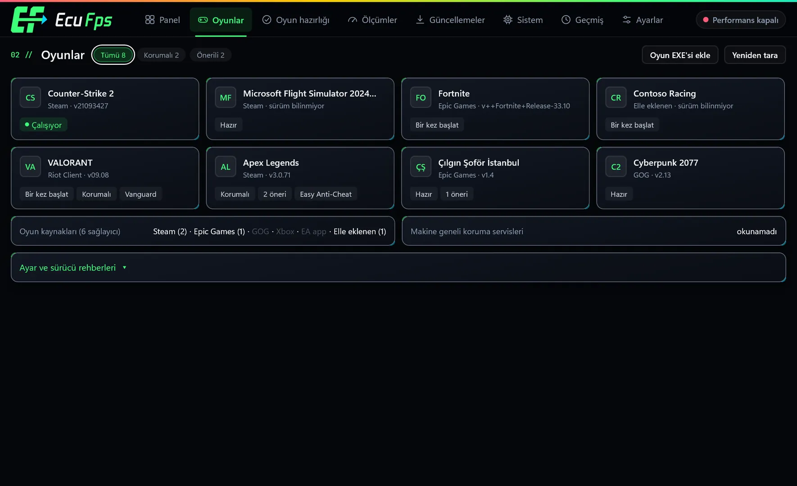
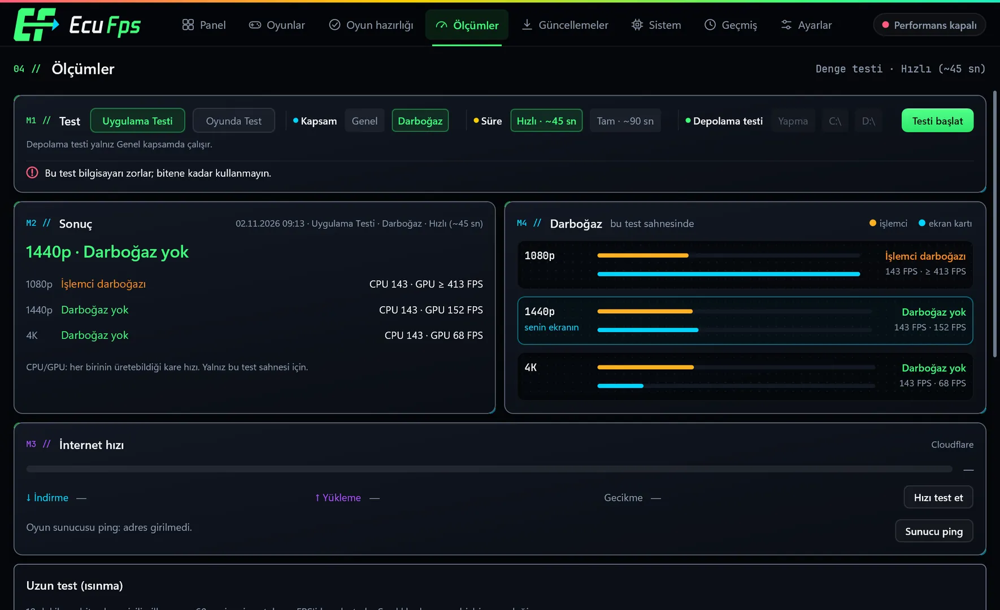
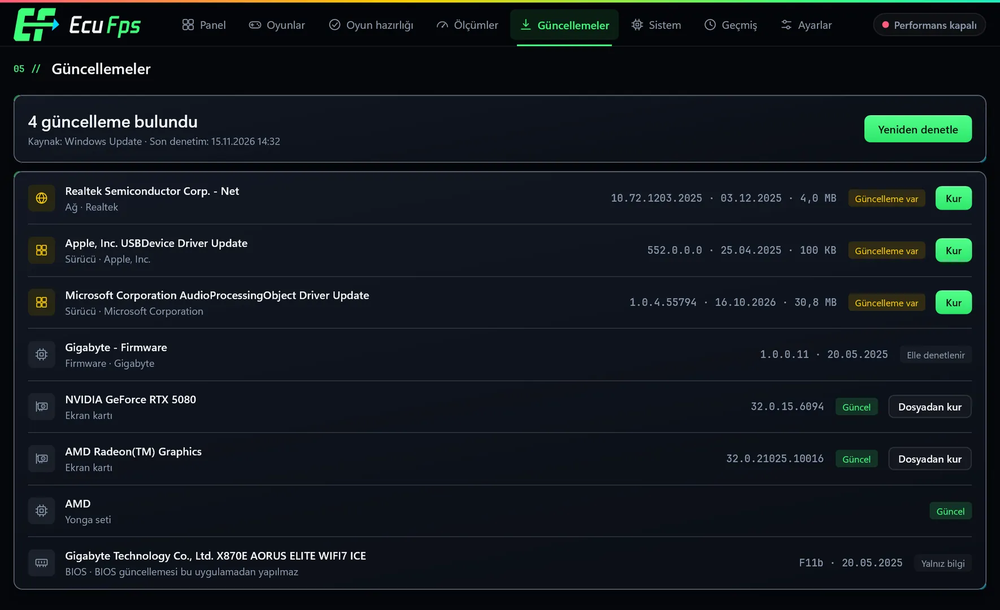
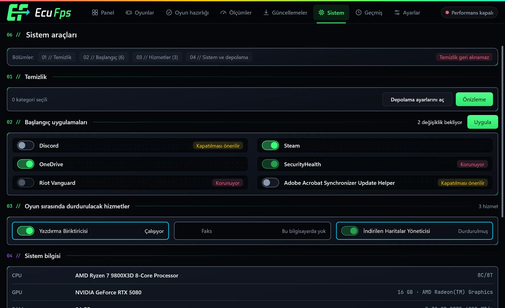
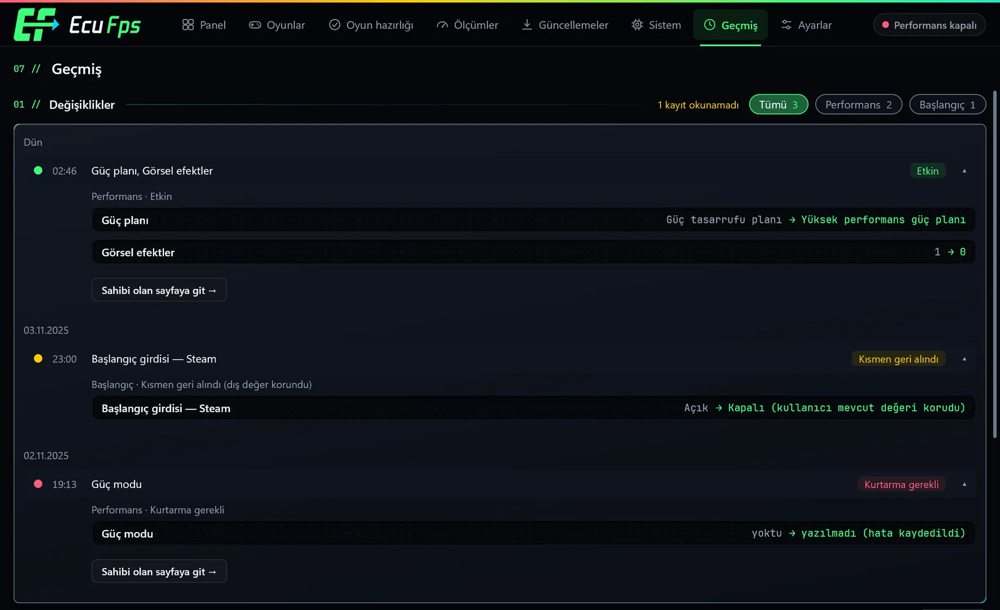

Oyun hazırlığı
Windows'un oyun için uygun olmayabilecek ayarlarını tek tek denetler; tek tıkla düzeltir, istersen geri alır.

Windows'u oyun için ayarlayan, darboğazını ölçen ve yaptığı ayar değişikliklerini geri alabilen ücretsiz Türkçe uygulama. Değişiklikler önce listelenir, Evet / Hayır onayın olmadan uygulanmaz ve geri alınabilir.
Ücretsiz indir
Her değişiklikten önce “Uygulansın mı? Evet / Hayır” diye sorar. Önceki değerleri kaydeder; Kapalı, Evet / Hayır onayıyla bunları geri yükler. Oyun dosyalarına, belleğine ve anti-cheat'e dokunmaz. Kazanç vaat etmez; “Etkiyi ölç” ile bu bilgisayarda fark ölçülebiliyor mu gösterir.
Profil yok, karmaşık menü yok. Program bilgisayarına uygun değişiklikleri seçer, sen onaylarsın. Kapatınca her şey senin eski ayarına döner, fabrika ayarına değil.
Düğmeye bas: uygulama önce sorar.
Temsilî gösterim. Bu sayfa bilgisayarında hiçbir ayarı değiştirmez.
Uygulamayı kapatmak, Performans'ın açık kalan ayarlarını değiştirmez; geri yükleme yalnız Kapalı ile, onayınla olur.
Uygulama her açıldığında ayarların Windows'taki güncel hâlini okur; hatırlanan bir durumu doğru diye göstermez.
Fabrika ayarı değil; Ecu Fps'ten önceki kendi değerlerin, "Geri yüklensin mi? Evet / Hayır" sorusuyla.
Performans, listelenen ve geri alınabilir güç, ekran kartı zamanlaması, oyun modu ve arka plan ayarlarını uygular. Etkisi vaat edilmez; her bilgisayarda ölçülebilir fark çıkmayabilir. "Etkiyi ölç" ile bu bilgisayarda fark olup olmadığını kendin görürsün.

Yaklaşık 45 saniyelik canlı 3B test sahnesi bilgisayarını adım adım zorlar. Test sırasında kare hızını, işlemci ve ekran kartı yükünü canlı izlersin.
Arkadaki parçacıklar temsilî animasyondur; ölçüm değildir.

Ekran görüntüsündeki sayılar örnek veridir. Sonuçlar senin bilgisayarında ölçülür; sayılar test sahnesine aittir, oyun FPS'i tahmini değildir.
Sekiz sayfa tek pencerede: Panel, Oyunlar, Oyun hazırlığı, Ölçümler, Güncellemeler, Sistem, Geçmiş ve Ayarlar. Üstte ince bir RGB şeridi, altında ayarlarının gerçek durumu.
Windows'un oyun için uygun olmayabilecek ayarlarını tek tek denetler; tek tıkla düzeltir, istersen geri alır.

Yüklü oyunlarını bulur. NVIDIA kartta oyuna özel sürücü profili. Korumalı oyunlarda deneme yapmaz.

Uygulama testi, darboğaz ve internet hızı. Önce ve sonra karşılaştır. Oyunda test, doğrulanmış korumasız oyun yoksa kapalı kalır.

Sürücüler Windows Update'ten ya da üreticinin resmî paketinden, imza kontrolüyle, uygulamanın içinde.

Geçici dosya temizliği, açılışta çalışan programlar, Windows onarımı (önce geri yükleme noktası).

Yapılan her değişiklik, ne zaman, önceki değeri neydi: hepsi kayıtlı ve görünür. Testleri seçip karşılaştırabilirsin.

Ekran görüntüleri uygulamanın gerçek arayüzüdür; içlerindeki oyun, donanım ve sayılar örnek veridir.
Kurulum dosyası kurmadan önce daha yeni sürüm var mı diye bakar.
Kurulumda yönetici izni istenir. Masaüstü ve Başlat menüsüne simge eklenir.
Performans Açık de. Yeni sürümler kendiliğinden gelir.
FPS artışı vaat etmiyoruz. Şimdiye kadar tek bir bilgisayarda yapılan ilk gerçek ölçümde ölçülebilir bir fark çıkmadı ("Fark yok"). Ecu Fps bu yüzden kazanç varsaymaz: senin bilgisayarında ölçer ve sonucu fark olsa da olmasa da olduğu gibi gösterir. Ecu Fps güç planı, ekran kartı zamanlaması, oyun modu ve arka plan ayarlarından listelenen, geri alınabilir değişiklikleri onayınla uygular. Etki donanıma, oyuna ve sistemin mevcut ayarlarına bağlıdır; bazı bilgisayarlarda ölçülebilir bir fark çıkmayabilir. Bu yüzden sabit bir rakam verilmez: "Etkiyi ölç", Performans Kapalı ve Açıkken aynı test sahnesini sırayla çalıştırıp bu bilgisayarda fark olup olmadığını gösterir. Sonuç yalnız o test sahnesi içindir, oyun FPS'i tahmini değildir.
Ecu Fps yalnızca Windows ve sürücü ayarlarıyla çalışır. Oyun dosyalarına ve oyun belleğine erişmez, oyuna kod enjekte etmez, oyun içi katman kullanmaz ve anti-cheat yazılımlarına müdahale etmez; hile yazılımlarıyla ilişkilendirilen tekniklerin hiçbiri kullanılmaz. Oyun yayıncılarının politikaları bizim kontrolümüzde olmadığından hiçbir üçüncü taraf yazılım için mutlak garanti verilemeyeceğini de açıkça belirtiriz.
Evet. Her ayar değiştirilmeden önce mevcut değeri kalıcı olarak kaydedilir; değişiklik uygulandıktan sonra geri okunarak doğrulanır. Performans Kapalı seçildiğinde, "Geri yüklensin mi? Evet / Hayır" sorusuyla sistem fabrika ayarlarına değil, Ecu Fps'ten önceki kendi ayarlarına döner. Tepsiden Çık ise ayarları geri almaz; uygulama her açılışta ayarların gerçek durumunu Windows'tan okur. İşlem yarıda kesilirse bir sonraki açılışta otomatik olarak tamamlanır veya geri alınır.
Ecu Fps şu anda ücretsiz alpha sürecinde olduğu için henüz dijital imza sertifikası taşımamaktadır. Windows SmartScreen, imzasız ve yeni yayımlanmış dosyalar için bu uyarıyı standart olarak gösterir. Dosyayı yalnızca resmî GitHub yayın sayfasından indirmeniz ve sayfada yer alan SHA-256 değeriyle karşılaştırmanız önerilir; ardından "Ek bilgi → Yine de çalıştır" ile devam edebilirsiniz.
Güç planı ve sistem ayarları gibi değişiklikler Windows tarafından yönetici yetkisi gerektirir. Bu izin kurulum sırasında bir kez istenir ve yalnızca Ecu Fps'in kendi yardımcı hizmetine verilir; günlük aç/kapa ayarları bu hizmetle yapılır. Yani yönetici izni yalnız kurulumda değildir: DNS değiştirme, sürücü veya üretici paketi kurma gibi daha hassas işlemlerde Windows ayrıca yönetici onayı sorar. Her değişiklik yine "Uygulansın mı? Evet / Hayır" onayından geçer.
Windows 10 ve Windows 11, 64 bit. NVIDIA, AMD ve Intel ekran kartları desteklenir; kullanılabilen özellikler kartın ve sürücünün sunduğu imkânlara göre belirlenir. Desteklenmeyen bir özellik gizlenmez, uygulamada açıkça "desteklenmiyor" olarak gösterilir.
Hayır. Ecu Fps tamamen ücretsizdir; abonelik, reklam veya uygulama içi satın alma içermez.
Uygulama içinden Ayarlar → Kaldır ya da Windows Ayarlar → Uygulamalar üzerinden kaldırılabilir. Kaldırma sırasında Ecu Fps'in yaptığı değişiklikler önce önceki değerlerine geri yüklenir, ardından program dosyaları, yardımcı hizmet ve kısayollar sistemden temizlenir.
Ücretsiz · Türkçe · Windows 10/11